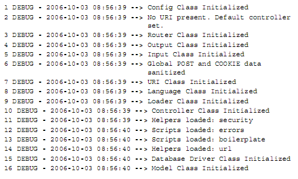
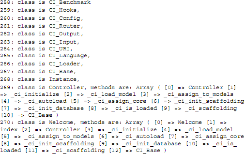
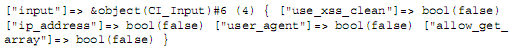
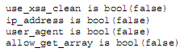
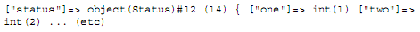

第七章 CodeIgniter 和对象
本章是“技术发烧友”的最爱。它讲述的是CodeIgniter的工作原理，也就是揭开CI头上的“神秘面纱”。如果你是CI新手，你可能会跳过本章。不过，迟早你会想要了解CI的幕后都发生了什么，为什么不真正的玩转它呢？
当我刚开始使用CodeIgniter的时候，对象使我迷惑。我是在使用PHP4的时候接触CI的，PHP4并不是真正的面向对象（OO）语言。我在一大堆的对象和方法，属性和继承，还有封装等数据结构中转悠，总是被类似的出错信息包围“Call to a member function on a non-object”。我如此频繁地看到它们，因此我想到要印一件T恤衫，上写：神秘，无规律可循，而我仿佛正穿着它站在一个现代艺术展会的会场上。
这一章的内容包含CI使用对象的方法，和OO编程的方法。顺便说一下，术语“变量/属性”，“方法/函数”是等义的，CI和PHP经常会混着使用它们。比如，你在控制器中写一个“函数”，纯OO程序员会称他们为“方法”。你称之为类的“变量”而纯OO程序员会叫它们“属性”。
7.1 面向对象编程
我正在假定你和我一样有OOP的基本知识，但如果只是在PHP4中尝试过可能还不太够。PHP4不是一种OO语言，虽然具备了一些OO的特征。PHP5会更好一些，它的引擎已经彻底改写成面向对象的了。
不过基本的OO特征PHP4也能实现，而且CI设法让你无论是使用PHP4还是PHP5，都有一样的行为特征。
重要的是你要记住，当OO程序运行时，总会有一个或数个真实的对象存在。对象可能彼此调用，只有当对象处于运行状态的那一刻你才可以读取变量（属性）和方法（函数）。因此了解哪个对象当前在运行并控制它们很重要。当一个类没有实例化时，你不能对它内部的属性和方法操作，静态方法和属性除外。
PHP，作为一个过程式编程和OO编程的混合体，可以让你混合编写又是过程式又是OO的程序，你可以在一个过程式代码中实例化一个类，然后使用它的属性和方法，用完后把它从内存中释放掉。这些工作，CI都可以为你代劳。
7.1.1 CI“超级对象”的工作原理
CI构建一个“超级对象”：它把你的整个程序当作一个大的对象。
当你开始运行CI程序的时候，将发生一连串复杂的事件。如果你设定你的CI允许记录日志，你将会见到类似下面这样的内容：

在启动时—每当通过Internet接收到一个页面请求—CI都执行相同的程序。你可以通过CI的文件来跟踪日志：
- index.php文件收到一个页面请求。URL指出哪一个控制器被调用，如果没有，CI有一个默认控制器（第2行）。Index.php开始一些基本检查然后调用codeigniter.php文件（\codeigniter\ codeigniter.php）。
- codeigniter.php文件实例化Config、Router、Input和URL（等等）类。（第1行和3-9行）这些被调用的叫做“基础”类：你很少直接与它们交互，但是CI做的每件事都与它们有关。
- codeigniter.php 检测它正在使用的PHP版本，根据版本决定调用Base4还是Base5（/codeigniter/base4（或5）.php）。然后创建一个“singleton”实例：即一个类只能有一个实例。并且都有一个公共的 &get_instance() 方法。注意符号 &：这是引用实例的符号。因此如果你调用 &get_instance() 方法，它产生类的单一实例。换句话说，整个应用中这个实例是唯一的，其中包含许许多多框架中其它类的实例。
- 在安全检查之后，codeigniter.php实例化被请求的控制器、或一个默认控制器（第10行）。新的类叫做 $CI。然后调用URL中指定的函数（或默认函数），类被实例化之后，相当于被唤醒了，实实在在的存在于内存中。然后，CI会实例化你需要的任何其他的类，并“include”你需要的功能脚本。因此，在上面的日志中，model类被实例化。（第16行）“boilerplate”脚本，也被装载（第13行），这是我编写的包含标准代码的一个文件。它是一个.php文件，保存在scripts目录中，但是它不是一个类：仅仅是一组函数。如果你正在写“纯粹的”PHP代码，你可能会使用“include”或者“require”把这个文件放进命名空间，CI会使用它自己的“装载”函数把它放入“超级对象”中。
“名字空间（namespace）”的概念或范围在这里是很重要的。当你声明一个变量、数组、对象等等的时候，PHP把变量名保存在内存中，并为它们的内容分配一个内存块。如果你用相同的名字定义两个变量就会出现问题。（在一个复杂的网站中，容易犯这样的错误。）基于这个原因，PHP有几条规则。举例来说：
- 每个函数有它自己的名字空间或者范围，而且定义在一个函数中的变量一般是一个“局部”变量。在函数外，它们是不可见的。
- 你可以声明“全局”变量，它们被放在特别的全局名字空间中，并且在整个程序中都可以调用。
- 对象有他们自己的名字空间：对象内的变量（属性）是与对象同时存在的，可以通过对象来引用。
因此 $variable、global $variable和 $this->variable是三个不同的东西。
特别地，在OO之前，这可能导致各种混乱：你可能有太多的变量在同一个名字空间中（以至于许多冲突的变量名互相覆盖），也可能发现有些变量在某个位置无法存取。CI为此提供了一个解决办法。
假如现在你已经键入如下URL：www.mysite.com/index.php/welcome/index，你希望调用welcome控制器的index函数。
如果你想要了解，哪个类和方法在当前的名字空间中可用，试着在welcome控制器中插入下列“检测”代码：

$fred = get_declared_classes(); foreach($fred as $value) {$extensions = get_class_methods($value); print "class is $value, methods are: "; print_r($extensions);}
试着运行它，它列出了270个已定义的类。大部分是PHP核心定义的。最后11个来自CI：10个是CI基础类（config、router等等）而且都是我的控制器调用的类。下面列出这11个类，清单只保留了最后的两个方法，其它的被省略了：

注意—看一下Welcome类括号中包含的内容（第270个：即我正在使用的控制器），它列出了Controller类的所有方法（第269个）。这就是为什么你总是需要从一个控制器类派生子类的原因—因为你需要你的新控制器保留这些函数。（而同样地，你的模型应该总是从model类继承。）Welcome类有两个额外的方法：welcome() 和index()。到目前为止，在270个类中，我写的只有这两个函数！
你可能还注意到了类的实例—即object。有一个指向它的变量，注意到那个引用符号了吗？表明在整个系统中，CI_Input类只有一个实例，可以用类变量input调用它：

还记得我们何时装载了input文件并且创建了最初的input类吗？它包含的属性是：

你可以看到，他们现在已经全部被包括在实例中了，“设计图纸”变成了房子，不是吗？
所有其它的CI“基础”类（routers、output等等）同样地被包含了。你不需要调用这些基础类，但是CI本身需要他们使你的代码正常工作。
7.1.2 引用复制
刚才提到，类变量input引用了CI_Input类：(["input"]=>&object(CI_Input))，加不加引用符号区别在于：加上引用符号，一变全变，不加引用符号，原始对象的内容不会改变。你可能会对此感到困惑，用一个简单的例子来说明：
显示1，因为 $two 是 $one 的拷贝。然而，如果你再重新给 $one 赋值：
仍然显示1，因为在对 $one重新赋值前 $two已经赋为1了，而 $one和 $two是两个不同的变量，各自分配有一小块内存，分别存放它们的值。
如果在 $one改变的时候，$two也要相应地改变，我们就要使用引用了，这个时候，$one和 $two实际上是指向了同一个内存块，一变全变：
现在显示5：我们改变变量 $one，实际上也同时改变了 $two。
把符号“=”改成“=&”意味着“引用”。针对对象来说，如果你要复制一个对象，与原来的对象没有关联，用“=”，如果要使两个变量指向同一个对象，就使用“&=”，这时候，一个变量做出的任何改变都会影响到其它变量。
7.2 在 CI“超级对象”中加入你自己的代码
你可以为CI“超级对象”加上你自己的代码。假定你已经写了一个名为“Status”的模型，它有两个属性：$one和 $two，构造函数给他们分配两个值：$one = 1和 $two = 2。当你装载这个模型时，让我们来看看会发生什么。
“instance”类有一个变量叫做“load”，用来引用对象CI_Loader。因此，在你的控制器中的代码是：
$this->load->model($status);
换句话说，调用当前CI“超级对象”的类变量load的model方法，装载一个模型，这个模型的名称存放在变量 $status中。让我们看一下保存在 /system/libraries/loader.php中的model方法：
function model($model, $name = '') { if ($model == '') return; $obj =& get_instance(); $obj->_ci_load_model($model, $name); }
（这个函数里的变量 $name是你要装载的模型的一个别名。我不知道为什么要使用一个别名，也许它会用在其他的名字空间中。）
就像你看到的，模型是以引用的方式装载进来的。因为get_instance() 是一个Singleton实例的方法，你总是针对同一个实例进行操作。
如果你重新运行控制器，用我们的“检测”代码来显示类的属性，你将会发现这个实例包含了一个新的属性：

换句话说，CI“超级对象”现在包括一个对象叫做 $status，它包含了我们刚定义的两个变量，并被分配了两个值。
因此我们正在逐渐地创建一个大的CI“超级对象”，允许你使用它的某些方法和属性，而不必担心它们来自哪里，或处于哪个名字空间中。
这就是需要CI箭头语法的理由。为了要使用一个模型中的方法，你必须先在你的控制器中装载模型：
$this->load->model('Model_name');
这使模型被装载进当前控制器的实例中，也就是 $this-> 中。你随后可以调用控制器中的model对象中的方法，像这样：
$this->Model_name->function();
就行了。
7.3 CI“超级对象”的问题
当Rick刚开始开发CI时，为了让CI在PHP4和PHP5下行为一致，他必须在Base4文件中使用比较“丑陋”的代码，不管丑不丑，我们不用关心，只要CI能够在PHP4环境下工作得和PHP5一样好就行了。
还有两个问题值得在这里提一下：
- 你可以尝试开发一个全新的对象并让它参与工作。
- 你必须小心地为你的网站设计架构，因为你不能在一个控制器里调用另一个控制器里的方法。
让我们一个一个地来分析这两个问题。 你记得我提到的T恤衫的那件事吗？在调用一个成员函数时我一直收到“Call to a member function on a non-object”的出错信息，这个出错信息产生的原因一般是因为你调用了一个类方法，但是忘了装载这个类。换句话说，你写了下列语句：
$this->Model_name->function();
但是忘记在它之前调用：
$this->load->model('Model_name');
还有一些其它情况，比如，你在类的一个方法中装载了模型，然后你尝试在另一个方法里调用模型的方法，虽然在同一个对象中，这样做也不行。所以最好的方法是在类的构造函数中装载模型，然后可以在这个类的所有方法中使用。
问题也可能更严重。如果写你自己的类，举例来说，你可能想要使用这个类存取数据库， 或在你的config文件中读取信息，换句话说，让这个类存取CI超级对象的某些部分。（如何装载你自己的类和类库会在第十三章中讨论。）概括起来，除非你的新类是一个控制器，一个模型或视图，它不能在CI超级对象中被构造。因此你不能在你的新类中写这样的代码：
$this->config->item('base_url');
这不会工作的，因为对你的新类来说，$this-> 意味着它本身，而不是CI超级对象。取而代之地，你必须通过调用Instance类用另一个变量名（通常是 $obj）把你的新类载入CI超级对象：
$obj =& get_instance();
现在你能像调用CI超级对象一样地调用它：
$obj->config->item('base_url');
并且这次它能工作了。
因此，当你编写你的新类时，记得它有它自己的标识符。让我们使用一个较简短的例子来把这个问题讲得更清楚一点。
你想要写一个library类，用向你的服务器发出页面请求的URL查找它的地理位置。这个library类有点像netGeo类，你可以在下列网址找到它：
http://www.phpclasses.org/browse/package/514.html
这个类使用一个switch函数，根据URL的地域分派不同的网页，比如来自英国和美国的URL请求，你就返回一个英语网页，德国和奥地利的URL请求就返回一个德语网页等等。现在，完整的URL会分成两个部分：基本URL（www.mysite.com/index.php）和附加的URL部分（mypage/germanversion）。
你需要从CI的config文件中取得基本URL部分。后半段网址通过你的新类的构造函数中的switch语句生成，如果这个客户在德国，调用德国的页面函数，依次类推。当这个工作在构造函数中做完以后，你需要把结果放到一个类属性中，所以可以在同一个类的其它函数中使用，这意味着：
- 基本URL从CI config文件中取得，这个只能通过CI超级对象的引用获得，换句话说，你可以用 $obj->config->item('base_url'); 获得
- URL的后半部分由你的新类的构造函数生成，并写到一个类属性中：$base。这个属性与CI超级对象无关，它属于你的新类，被引用为 $this->base。
装载时会用到两个关键词：$this-> 和 $obj->，在同一段代码中被引用，举例来说：
class my_new_class{ var $base; My_new_class() { $obj =& get_instance(); // geolocation code here, returning a value through a switch statement //this value is assigned to $local_url $this->base = $obj->config->item('base_url'); $this->base .= $local_url; }
如果你不清楚这些概念，“Call to a member function on a non-object”就会频繁的出现。上例中，如果你试着调用 $obj->base或 $this->config->item() 时，这个出错信息就出现了。
转到下一个问题，你无法在一个控制器的内部调用另一个控制器的方法。你为什么会想要这样做？这视情况而定。在一个应用中，我在每个控制器内部写了一系列自我测试函数，如果我调用 $this->selftest()，它将完成各种不同的测试。但是，在每个函数中写重复的代码似乎与OO编程的设计原则不符，因此我想在其中一个控制器中写一个函数，可以进入到其它的控制器中执行自我测试代码。当我这样做了，期望得到想要的结果。最后，当然不能如我所愿，因为在一个控制器内不能调用另一个控制器的方法。
作为一个准则，如果你有代码被超过一个控制器调用的话，把它放入一个模型或者其它什么分离的代码文件中，这样就可以使用了。
这些都是小问题。正如Rick告诉我的一样：
“我想要简化问题，所以，我决定创建一个大的控制器对象包含很多其它对象的实例：…当一个用户创建他们自己的控制器时，他们能够轻松地访问任何资源，不用担心作用域的问题。”
这样做相当不错，绝大多数情况下，高效的在幕后完成了所有工作。因此我不必去做那件T恤衫了。
7.4 总结
我们已经看到CI创建的“超级对象”确保了所有方法和属性可以自动地获取，而不用担心如何管理，并且也不需要为“作用域”操心。
CI用引用实例的方法把一个一个的类实例组合成一个超级对象。大多数情况下，你不需要知道CI超级对象是如何工作的，只需要正确使用“->”符号就行了。
我们也学习了如何编写自己的类，并使它与CI很好地协同工作。